Overview
In this tutorial we will cover the process of setting up a CAT Rig in 3ds Max. This tutorial is not covering the modeling or texturing process. It´s an overview how to setup your mesh with CAT, going over the skinning process, create an animation and export it into CRYENGINE. CAT (Character Animation Toolkit) is a 3ds Max plug-in. It offers a simple interface and gets good result whenever you are creating your own custom rigs or using an existing rig. Further information about this tool can be found at the Autodesk documentation.
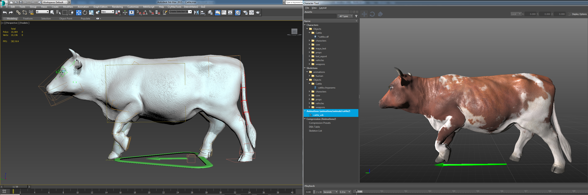
Pic1: Mesh with CAT Rig and walk animation
Pre-requisites for this Tutorial
Before you we continue make sure that you know about the following information:
- The basic CRYENGINE 3ds Max workflow
- CRYENGINE Exporter
- 3ds Max unit scale to match up with CRYENGINE unit system
Helpful Information
Make sure to keep the following things in mind:
- Make sure there are no transformation applied to the mesh (position, rotation, scale)
- If there is, apply a Xform Modifier
- Choose a pose that suits the range of motion that the character needs to achieve
- Make sure the size is tested in the Engine before you start to create a rig, because there is no easy way to scale a rig with animation afterwards
- Is recommended to test the scale with a CGF export, also the material setup
Initial 3ds Max Setup
For this tutorial, we will be creating our asset in the following directory.
<Project Folder>\Assets\Objects\tutorial\Cattle
We need to save our 3ds Max scene in this location. All our exported assets will be stored in this folder like texture,material, skin files etc.
We will continue with the assumption that you have already created the asset, since this isn't a 3ds Max modeling tutorial. We will begin with preparing the asset ready for CRYENGINE, assigning SubIDs to the relevant polygons and configuring the material.
In this file we have the cow as a mesh and additionally the eyeballs as a separate mesh.
Material
First we will configure the material for the object. In 3ds Max open the Material Editor. Go to a material and press the Standard button and select Multi/Sub-Object from the material list and call it Cattle.mtl.
We create a SubMaterial with 4 SubIDs and set the shader to Crytek Shader
The material IDs are:
- proxy
- cow_body
- eyes_outer
- eye_lash
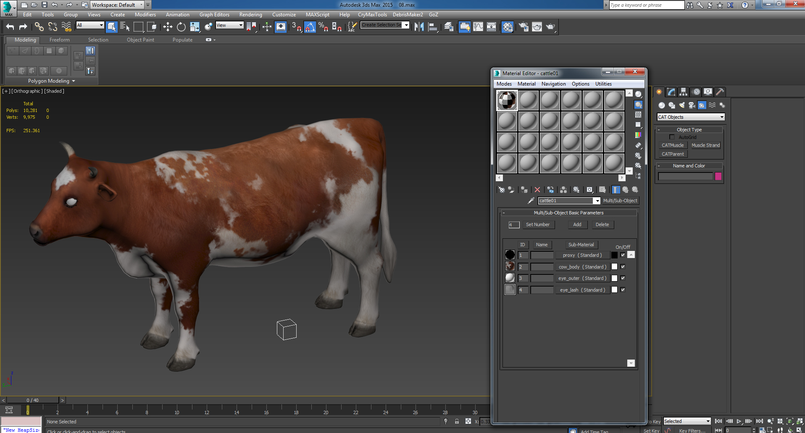
Pic2: 3ds Max Material IDs applied to the mesh
Exporting the Material
Now we have configured the material for the object with 4 SubIds, one for the physicalisation, one for the main body parts, one for the outer sphere of the eyeball and the last one is for the eyelashes.
- Make sure you have the correct material selected in the material editor (be at the materials root level, not inside a SubId)
- In the CRYENGINE Exporter click the Create Material button. Save this into the same directory as the object:
<Project Folder>\Assets\Objects\tutorial\Cattle.mtl
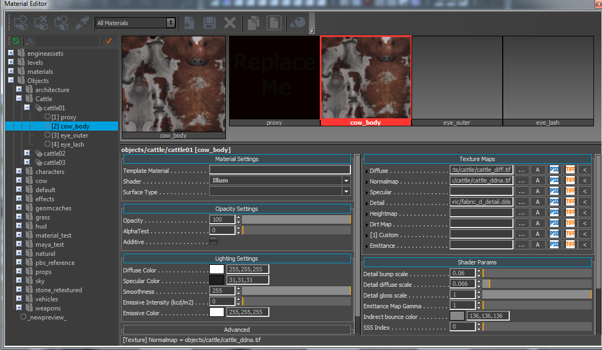
Pic3: 3ds Max Material IDs applied to the mesh
Here we have all 4 Materials.
- Proxy with No Draw
- Ilum shader with related texture maps
- Glass shader for the outer sphere of the eyeball
- Hair shader for the eyelashes
Geometry
To keep everything clear we create a new layer in the 3ds Max´s Layer Explorer and name it "Cattle". We are adding our Cattle mesh to this layer. For the CAT Rig we also need a Layer, so let´s create a second Layer and call it "CAT".
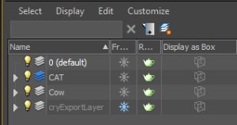
Pic4: Setup in Layer Explorer
Before we start, make sure the your mesh is facing in Y up, and X + direction (If you are in the top view in 3ds Max, your mesh should face in the up direction)
The pivot of the mesh should be in the 0,0,0 position.
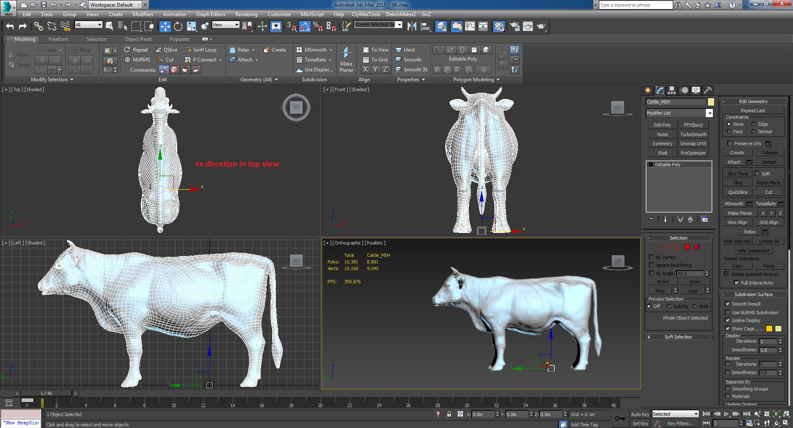
Pic5: Layer Explorer Setup
We are ready to apply a rig to our mesh, while it's in the T-Pose or binding Pose.
Create a CAT Rig
Go to the 3ds Max Layer Explorer and select the CAT Layer. Now we need to create a CAT Rig in our scene, for doing so go to the Create Panel and to the Helpers tab in the dropdown menu choose CAT Objects:
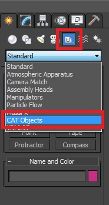
Pic6: Create Panel and choosing CAT Objects
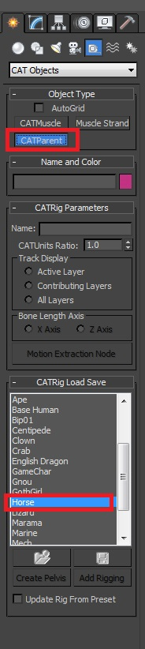
Pic7: Choose the CAT Parent and choose the Horse preset
When CAT Objects is selected you can choose one of the presets, in this example we are using the Horse preset, because it fits our Cattle anatomy the best. You also have the opportunity to create your own custom rig. By clicking and dragging in the perspective viewport you can create the CAT Rig. The size of the rig is determined by how far you drag in the viewport. It is recommended to create the Rig in the origin of the scene. By default CAT creates all rigs in the X-, Y- direction. For CRYENGINE we need to rotate the Rig 180 degrees. To rotate, select the CAT Parent, go to the Modify panel and select the Xform modifier and add it on top.
After this select the CAT Object and rotate it 180 degrees. Then collapse the Xform modifier.
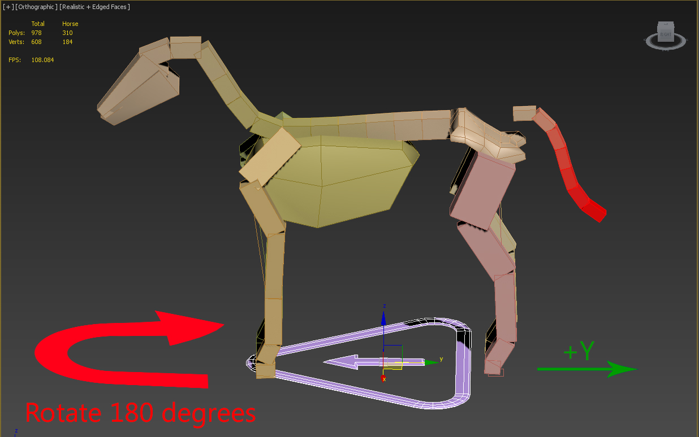
Pic8: Created Horse rig in the Scene Center and rotate it with the Xform 180 degrees
The next step is to fit the rig into our actual mesh. Select the bones, move and scale them until they fit.
You can also customize your bones to fit your actual shape more. You can find out more about this in the Autodesk documentation.
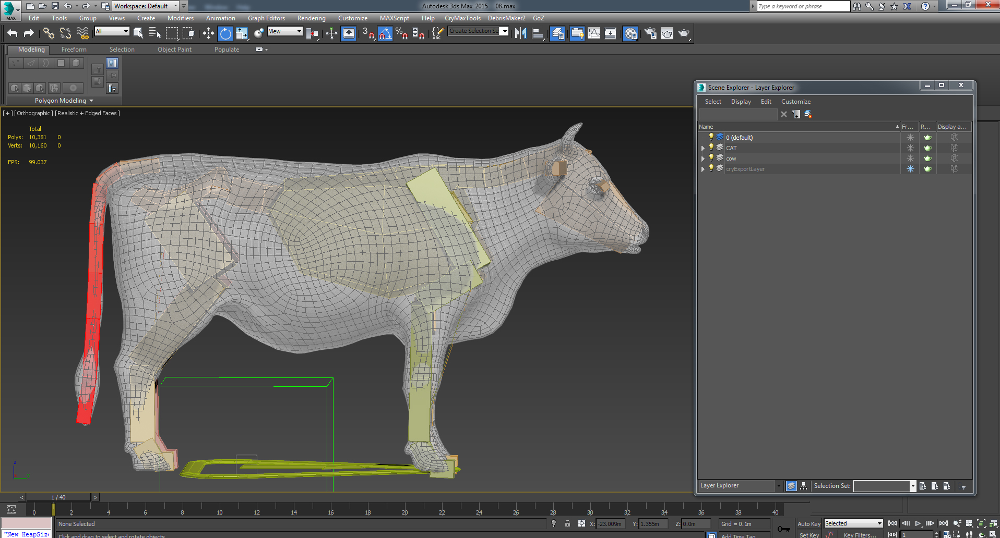
Pic9: The final rig setup fitting to the cattle geometry with helper Dummy
For the rig setup we need one more thing. To export the bones into CRYENGINE we need to create a "Dummy" object. In the menu bar, go to Create -> Helpers and select Dummy and drag it into the viewport. Set the position of the Dummy to 0,0,0. Now we put the dummy on the CAT Layer for a better scene overview. The last thing we have to do is to link this Dummy to the pelvis bone. You can link it in the schematic view or with the Select and Link tool in the main toolbar.
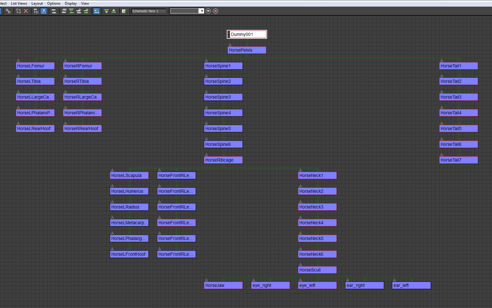
Pic10: Hierarchy of our Rig Setup and Dummy linking in the Schematic View
Skinning
Adding Skin Modifier
Now we need to add a skin modifier to our mesh. Select your mesh go to the Modify tab and select the Skin modifier on top of your mesh. Now click the Add button next to the bones section, the Layer Explorer will open go to the CAT layer we have created before and select all bones in the hierarchy. Do not add the CAT parent or platform helpers.
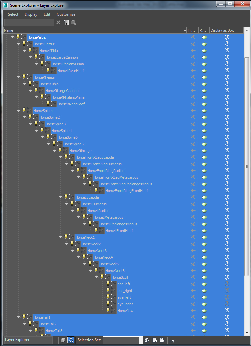
Pic11: Add Bones to your Skin Modifier
After all the bones are added go into the Advanced Parameters rollout and set the Bone Affect Limit to 8 instead of 20. (up to 8 bones affecting each vertex are supported, but if you don't need 8 we still recommend to set the limit to 4, as 8 will take more memory and affect performance.
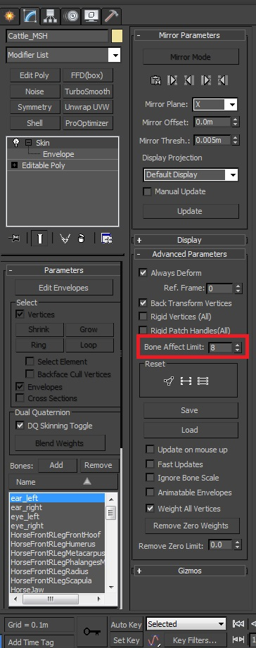
Pic12: Set Bone Affect Limit to 8
Now we can start to edit the Envelopes with adjusting the control points and the falloff. Most often, you use envelopes to correct the way skin behaves as the CAT moves. However, you can override envelopes by assigning vertex properties manually. Keep in mind that you can't Undo editing the Envelopes when you have clicked the vertices button. So be aware to have your envelopes correct before adding skinning manually. Also 3ds Max has an issue with vertices with zero skinning. Keep in mind to have all vertices skinned to at least one bone. A good way for skinning is to create an animation layer, make some key frames in different poses. When you now change your time slider you can clearly see where your model has some skin stretching.
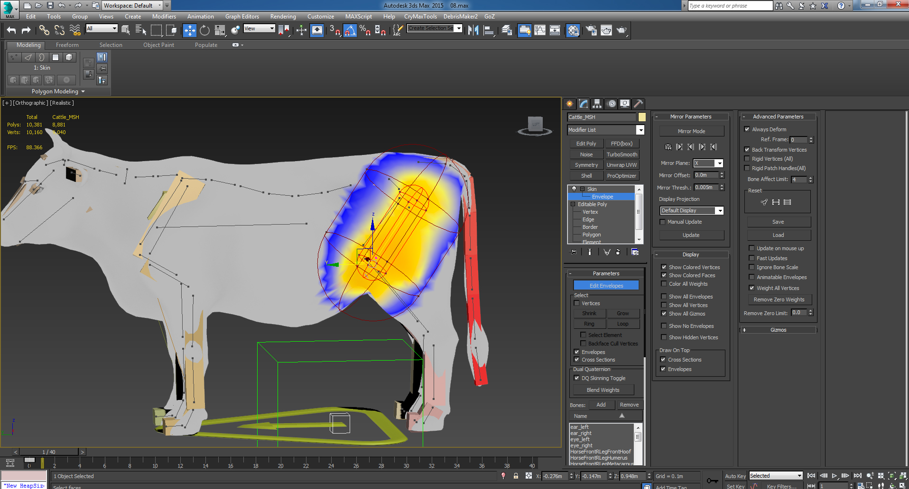
Pic13: Editing Envelopes
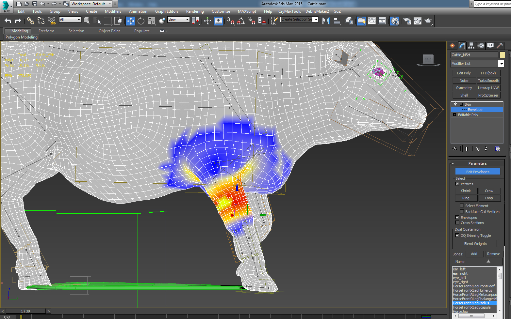
Pic14: Start skinning and painting weights by hand for each bone
A precise skinning take quite a bit to achieve. We are not going over this in detail.
The eyes are an extra mesh as described above just for sufficiency of the document a short overview about the setup here. The Eyes have a Skin modifier and are skinned to the left and right eye bone. These meshes are exported as *.skin files in this case they are called eye_left.skin and eye_right.skin. In CRYENGINE they work as a Skin Attachment. The setup will be explained later on in this tutorial.
Saving the Binding Pose
Now we are ready to save our Binding Pose or Skin Pose. The Skin Pose stores a specific position, rotation and scale for an object. Its intended use is for storing a character assembly's pose for the Skin modifier. However, a Skin Pose can be used for any object to store its current transforms for later retrieval. These commands work on any object, regardless of whether the structure is part of a character assembly, or whether the bones have been assigned to a mesh with the Skin modifier.
First we have to create an absolute animation Layer. Go to the Motion tab and click the Absolute button in the Animation Layer Explorer. This will create a new Absolute Animation Layer (Abs). Now click the red Stop button and the Layer is in play mode, that means all keyframes for the animation will be stored in this layer. Next we have to go to 0 in our timeline and make key frames for all bones. For the next step we are going to the Clip Manager and click the Pose button, click on the little Save Pose button and save this pose in your folder structure. This pose is a backup; sometimes it can happen that you are destroying your binding pose while messing around with the animation. Its not a absolutely necessary step but it's always good to have a backup stored somewhere that you can jump back to easily.
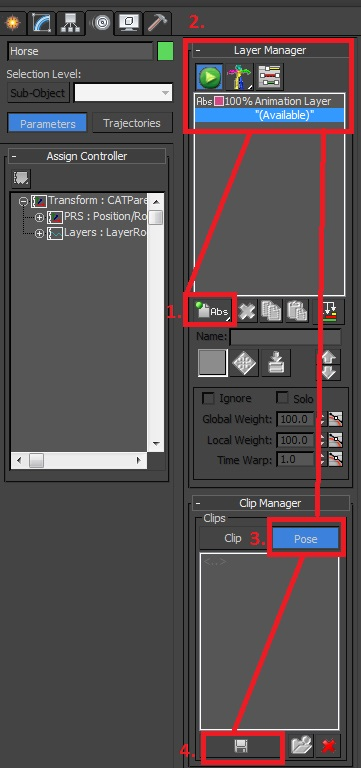
Pic15: Create abolute animation layer and save binding pose
If we are done with this we can jump right into the animation.
Animation
For testing your Skin you can go to the CAT Motion panel and create new CAT motion layer and press the play button. The good thing about CAT is that the rigs have some default walk animation.
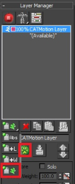
Pic16: CAT Motion Layer, with default walk animation
You can customize these animations as well for a quick setup to test your mesh. For setting up an animation for a four-legged Animal we need a Quadruped.
You can find some good tutorials on the internet. It takes a bit of time to create these animations. We are not going over the whole process.
Just some key points:
- Keep an eye on good looking and smooth animation curves
- Make sure the loop is working fine
- Don’t stretch your mesh to much in the animation because you don’t want to have strong skin stretching (causes texture stretching)
- For good realistic animation get some real life references
- Don’t waste to many frames if they are not needed
- Stay in local mode for moving and rotation the bone
Setup for CRYENGINE Export
First we need to create a CRYENGINE Character File or *.chr file this is created in the 3D application and contains the skeleton data and physics proxies used for hit detection and ragdoll simulation which is driven by animations. For now we are not setting up any ragdoll, LOD´s or Collision meshes. Because the setup would be the same as for the bidped system.
Creating the CHR File and export it
First we have to create a simple box and convert it to a polygon and name it "Cattle_CHR". It does not matter what kind of shape this mesh has, usually it's a triangle shape to save some polygons, but for faster working we are using a simple box in this tutorial. We will put this box into our Cattle Layer in the Layer Explorer. Now select this Cattle_CHR mesh and scale it down and place it into your animated mesh. It should be not visible while the animation is playing. Go to the Modify panel and add a Skin modifier to this Cattle_CHR mesh.
in the Skin modifier click the Add button in the Skin Parameters and the Layer Explorer will open. Select the pelvis bone and click on select. We'll adding only the pelvis bone because it’s the root bone of our hierarchy.
The *.chr file allows us to show the blank rig in the Engine, so we can easily check if the position and scale of the bones are correct.
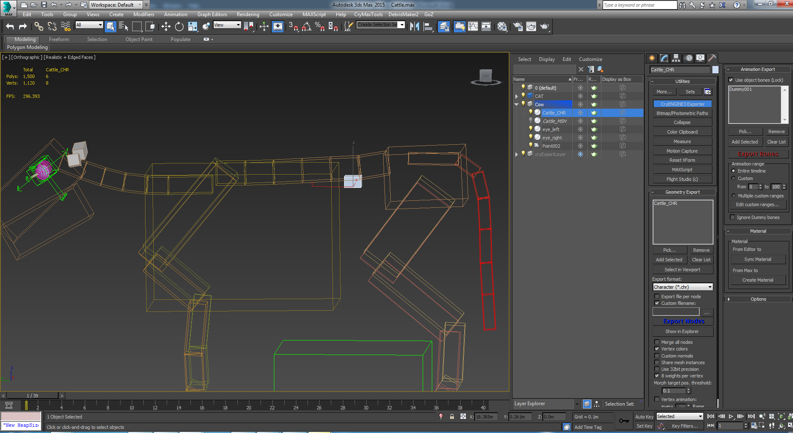
Pic16: Character File (*chr.) with Skin Modifier
The animation range is on current timeline, that means all animation from fram 1 to 40 gets exported out. You also can set a custom time range if you have more than one animation.
We need to export this file type into CRYENGINE. Before doing this, we need to switch off the animation layer. The mesh should be now in the binding pose again. Open up the CRYENGINE3 Exporter and select the Cattle_CHR mesh and add it to the Geometry Exporter window. Set the export format to *chr. and choose the folder where we saved our max file from the beginning. Click the Export button to create a *.chr file in the asset folder.
Export the Skin File
For the next step we need to export the *skin. file into the CRYENGINE. The *.skin file is created in the 3D application and contains skinned character data. It can be any asset that is animated with bone-weighted vertices like humans, aliens, ropes, lamps, heads, and parachutes. The *.skin file includes the mesh, vertex weighting, vertex colors, and morph targets. Make sure the Animation Layer is still in the non recording mode. Clear the Geometry Export window in the CRYENGINE3 Exporter For exporting out the *.skin we have to select the Cattle_MSH and click the Add Selected button, as file type we have to select Character skin (*.skin).
Tick the 8 weights per vertex checkbox.
As export location we simply choose the same path as for the *.chr file.
Now we are ready for hitting the Export Nodes button.
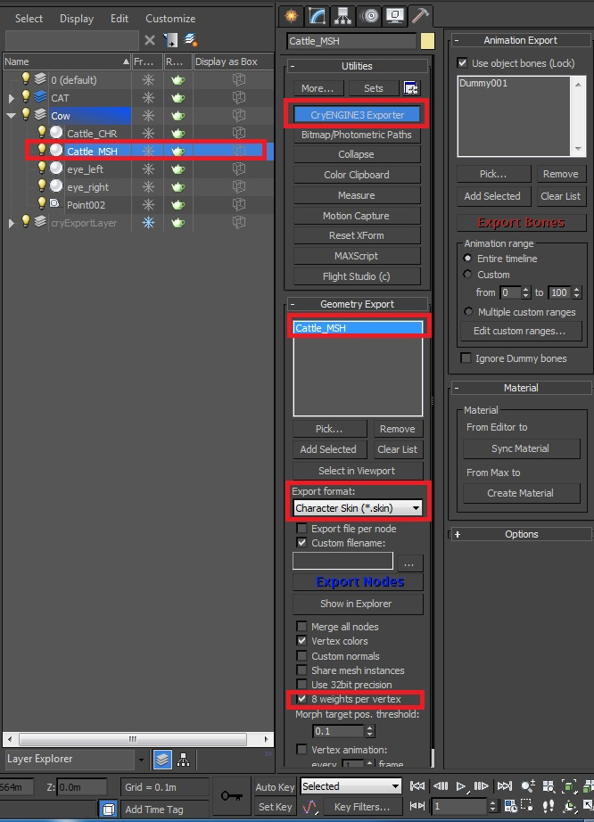
Pic17: Skin Export Setup in the CRYENGINE3 EXPORTER
Export the Bones with Animation
For exporting the bones, the first thing we have to do is to go to our "Motion Panel" and turn on the animation layer.
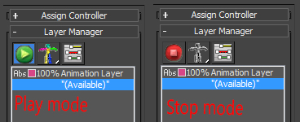
Pic18: Play mode animation layer is on, stop mode mesh has its binding pose and no animation is playing
Select the "Dummy" from the CAT Layer that we´ve created in the rigging section and add it to the Animation Export with the Add Selected button.
For the animation you can save this file in your assets folder.
The animation is set from 1 to 40 frames and we want to export the entire timeline. In the Animation Range, set the checkbox to entire timeline.
When you click the Export bones button the "Save to location" window will open. Here we choose correct path for the *.i_caf file.
The intermediate character animation file contains the animated bone data for a specific character. The .i_caf files can be exchanged between characters with similar bone structures. The intermediate character animation file stores animation in uncompressed format and is used in production. Such files are created with DCC plugins.
CRYENGINE Character Tool Setup
To get our character into CRYENGINE we have to create some files in the Engine.
Creating an Entry in the Skeleton List
This step is for setting up our character in the Skeleton List.
- Go to the left side on the screen under Compression (Animations) and you find the Skeleton List tab.
- Click on it and the list will open on the right side of the Character Tool window.
- Now click on the little down arrow next to Aliases and choose Add from the drop down menu.
- Scroll down to the bottom of the list. Click on the Browse button to the right of the empty fields and choose your *.chr file.
Creating a CDF file
The character definition file is created in the Character Editor in Sandbox. It contains the reference to a .chr file and its attachments (can be .chr or .cgf).
- Open up CRYENGINE and open the Character Tool
- Go to File -> New Character and name it "Cattle" and save it in your objects folder.
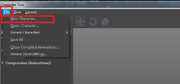
Pic19: Create a New Character in the Character Tool
- Next click on the new created "Cattle.cdf" file
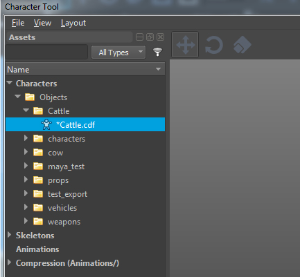
Pic20: New created Cattle.cdf
Click on the Cattle.cdf in the Characters list and go to the right side in the Properties tab. in the skeleton section click on the folder icon and choose your Cattle.chr file.
Now press the button next to Attachments and choose Add from the drop down menu. As type select the Skin Attachment. In the Geometry tab choose your *.skin file and in the Material tab choose the material that we have created before.
If you like to add some more objects to the mesh go to the attachments button again and choose Add.
In this case we have the eyes as attachment. Choose Skin Attachment and select the Cattle_eye.skin file to the geometry tab, same goes for the texture.
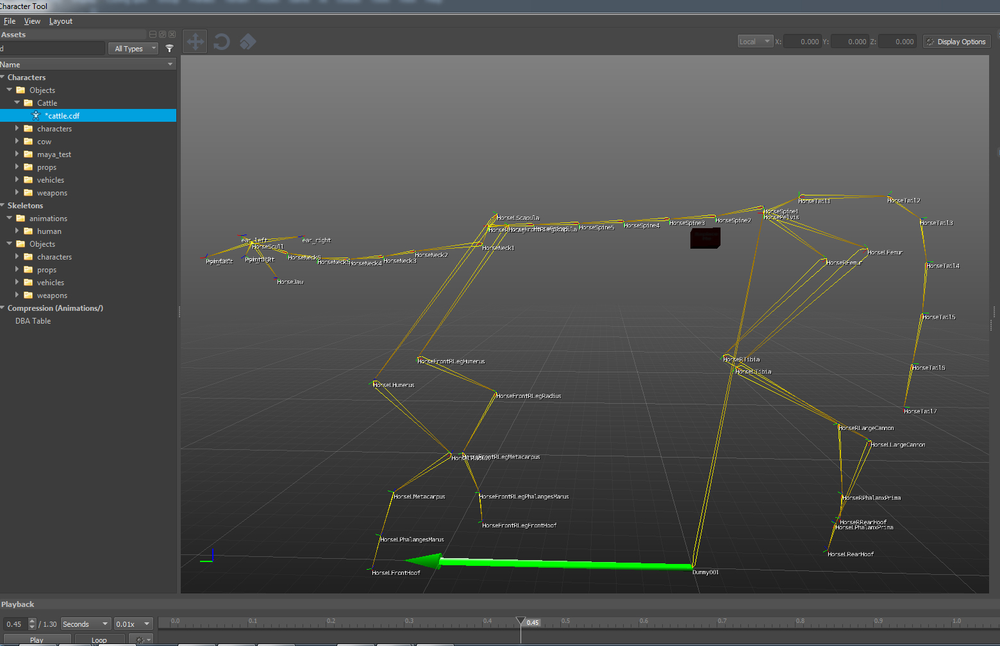
Pic21: Chr file with blank skeleton and bone naming
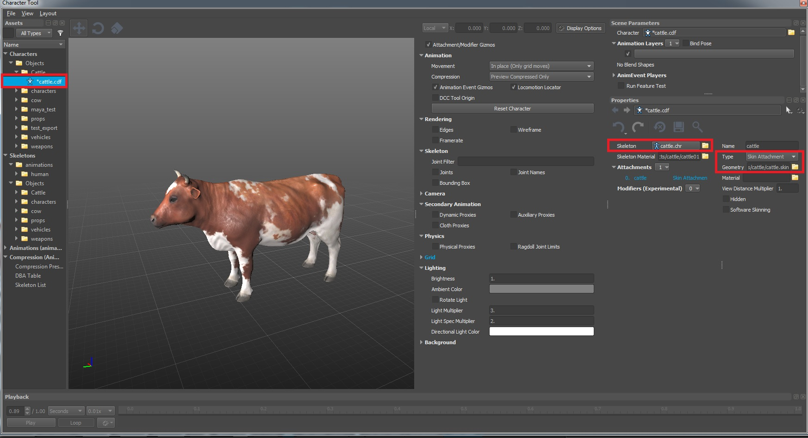
Pic22: CDF with skin attachment
Creating a Chrparams file
For the Engine we need an Chrparams file. When creating the *.cdf file the Engine will create an Chrparams file automatically for you.
for a (skeletal) character in the game, there are certain definitions that have to be made in a single unified XML file-structure called a *.chrparams file. The *.chrparams file has the same name as the character file to which it refers.
On the left side of the Character Tool, go to Skeletons, find the folder with your character assets and click on Cattle.chrparams.
Now we have to set up a Skeleton and the animation file. On the right side under the Properties you see the tab Animation Set Filter. Click on this little arrow and choose Add:
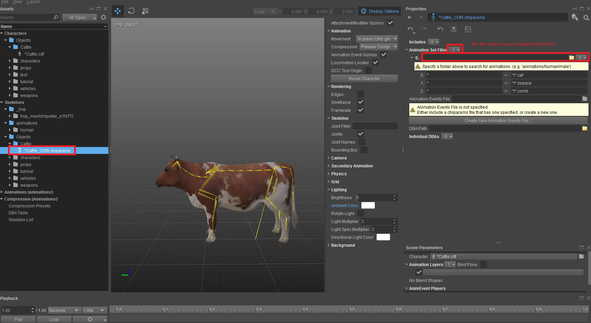
Pic23: Adding an Animation Set Filter
the next step is to select the folder where you exported your i_caf file. Last thing to do is to save this chrparams file, for this simply press the Save icon.
To see the animation go to the Cattle.cdf make a double click.
On the left side you can find now an Animations List. Click on this and it will open your exported animation. If you click on the animation name the Engine will play your animation.
The last thing we have to do is to save this file.
To play the animation make a double click on the Cattle.cdf file.
If the animation is not playing, shut down the CRYENGINE Editor and reopen it.